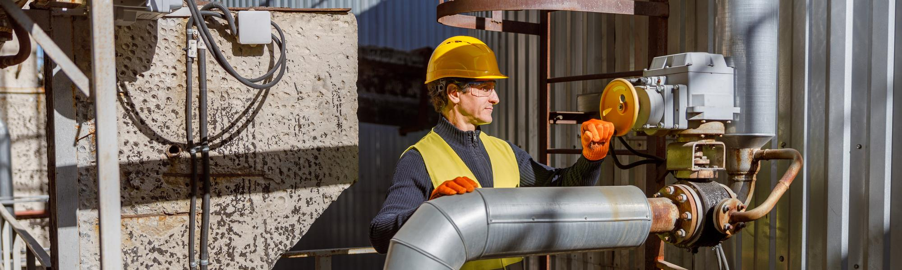
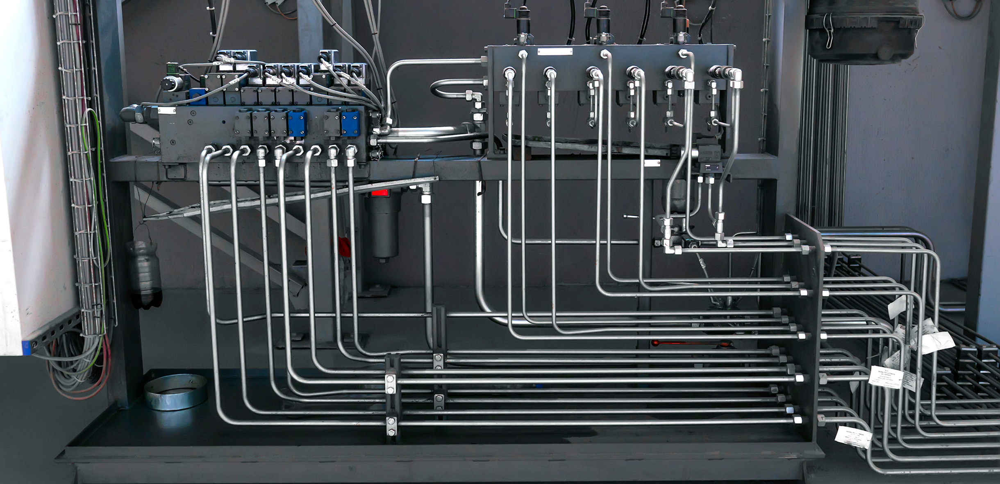

Tratamento e redes de distribuição


Nesta aula, os seguintes tópicos serão explorados:
tópico
Tópico 1: Secagem, purificação e condicionamento do ar (FRL, secadores, filtros)
tópico
Tópico 2: Elementos e acessórios das linhas de distribuição
tópico
Tópico 3: Projeto e dimensionamento de redes pneumáticas


Secagem, purificação e condicionamento do ar (FRL, secadores, filtros)
Estudante, nas aulas anteriores, você aprendeu como o ar comprimido é gerado e dimensionado. No entanto, gerar ar comprimido não é suficiente para garantir um sistema pneumático confiável. O ar precisa ser tratado, pois o ar atmosférico aspirado pelo compressor contém contaminantes que podem comprometer seriamente o funcionamento dos equipamentos.
Na prática industrial, boa parte das falhas em sistemas pneumáticos não está relacionada ao atuador ou à válvula, mas sim à qualidade do ar comprimido.
Por que tratar o ar comprimido?
De acordo com Filho e Santos (2018), o ar comprimido contém, basicamente, três tipos de contaminantes:
- Partículas sólidas (poeira, ferrugem, resíduos de tubulação).
- Óleo (proveniente do compressor).
- Umidade (vapor d’água que se condensa após o resfriamento).
E mesmo após a compressão, é impossível eliminar totalmente a umidade do ar. Por isso, considera-se ar seco aquele que possui um nível de umidade residual compatível com a aplicação, sem causar danos aos equipamentos.
Dessa forma, vale a pena investir em tratamento do ar? Na maioria dos casos, o custo do tratamento é rapidamente compensado pela redução de falhas, manutenção e paradas de máquina (Rollins, 2004).
Secagem do ar comprimido
A secagem do ar tem como objetivo reduzir o teor de umidade, evitando condensação na rede e nos componentes pneumáticos. Os principais métodos utilizados na indústria são:
-
Secagem por refrigeração.
-
Secagem por absorção.
-
Secagem por adsorção.


Secagem por refrigeração
De acordo com Rollins (2004), é o método mais utilizado em aplicações industriais gerais. O princípio consiste em resfriar o ar comprimido até uma temperatura suficientemente baixa, provocando a condensação da umidade.
Durante esse processo:
- O ar passa por um pré-resfriador.
- Entra no resfriador principal, em contato com um circuito de refrigeração.
- O condensado formado é separado e eliminado por drenos.
A temperatura típica do ar seco após o processo fica entre 0,65 °C e 3,2 °C, evitando a formação de gelo na rede.
Secagem por absorção
Outra forma de secagem, segundo Rollin (2004), é a secagem por absorção, que utiliza uma substância higroscópica capaz de reagir quimicamente com o vapor d’água.
Características importantes:
- É um processo químico.
- O material absorvente é consumido ao longo do tempo.
- Exige reposição periódica da substância.
As substâncias mais utilizadas incluem:
- Cloreto de cálcio.
- Cloreto de lítio.
- Dry-o-Lite.
Secagem por adsorção
Rollins (2004) também define a secagem por adsorção, onde o vapor d’água é retido na superfície de materiais sólidos adsortivos, devido a forças físicas de atração molecular.
Materiais mais comuns:
- Sílica gel.
- Alumina ativada.
- Sorbead.
Esse método é indicado quando se exige ar extremamente seco, como em instrumentação, indústria eletrônica e processos especiais.
Condicionamento do ar comprimido – Unidade FRL
Após a secagem, o ar comprimido passa pelo condicionamento final, normalmente realizado próximo ao ponto de consumo, por meio da unidade FRL (Filtro, Regulador e Lubrificador), também conhecida como Lubrefil (Prudente, 2015).

Pela Figura 02 é possível definir que essa unidade tem a função de:
-
Remover impurezas remanescentes (Filtro - 1).
-
Ajustar a pressão de trabalho (Regulador de pressão - 2).
-
Introduzir óleo lubrificante, quando necessário (Lubrificador - 3).
Filtro
O filtro remove:
Em aplicações mais exigentes, filtros especiais podem atingir níveis de remoção de até 99,98% dos contaminantes.
Regulador de pressão
O regulador mantém a pressão de saída constante, mesmo com variações de consumo.
Suas funções principais são:
- Compensar variações de vazão.
- Proteger os componentes pneumáticos.
- Funcionar como elemento de segurança.
Lubrificador
O lubrificador introduz uma pequena e controlada quantidade de óleo no fluxo de ar, reduzindo atrito e desgaste.
Nem todo sistema pneumático exige lubrificação. Quando utilizada, deve-se empregar óleo específico para pneumática, compatível com vedações de borracha nitrílica – NBR (Prudente, 2015).

Então, estudante, neste tópico, você compreendeu que o tratamento do ar comprimido envolve secagem, purificação e condicionamento, etapas fundamentais para garantir confiabilidade, eficiência e vida útil aos sistemas pneumáticos.
No próximo tópico, estudaremos os elementos e acessórios das linhas de distribuição, entendendo como o ar tratado é transportado até os pontos de consumo.
Em um sistema pneumático industrial, mesmo após a compressão do ar, observa-se a ocorrência de falhas em válvulas, desgaste prematuro de atuadores e presença de água nas tubulações. A análise do sistema indica que o ar aspirado pelo compressor não recebe tratamento adequado antes de ser distribuído aos pontos de consumo.
Com base nos conceitos de secagem, purificação e condicionamento do ar comprimido, assinale a alternativa correta.
- O tratamento do ar comprimido é dispensável, pois o processo de compressão elimina a umidade e as impurezas presentes no ar atmosférico.
- O uso da unidade FRL permite remover impurezas, regular a pressão de trabalho e, quando necessário, lubrificar o ar comprimido próximo ao ponto de consumo.
- A secagem do ar tem como objetivo principal aumentar a pressão de trabalho do sistema, não influenciando a presença de umidade na rede.
- A secagem por absorção e por adsorção são processos físicos equivalentes e utilizam os mesmos materiais no tratamento do ar comprimido.
- O lubrificador deve ser utilizado em todos os sistemas pneumáticos, independentemente do tipo de aplicação ou das recomendações do fabricante.
A alternativa B é a correta.
Justificativa: A unidade FRL (Filtro, Regulador e Lubrificador) realiza o condicionamento final do ar comprimido, removendo impurezas remanescentes, ajustando a pressão de trabalho e introduzindo óleo lubrificante quando necessário. Esses cuidados são fundamentais para garantir o bom funcionamento, a durabilidade e a confiabilidade dos componentes pneumáticos.

Elementos e acessórios das linhas de distribuição
Estudante, depois que o ar comprimido é gerado e tratado adequadamente, surge um novo desafio: garantir que esse ar chegue ao ponto de uso com a mesma qualidade. É exatamente essa a função da rede de distribuição pneumática. Ela não é apenas um conjunto de tubos, mas um sistema projetado para preservar pressão, vazão e limpeza do ar ao longo de todo o percurso.
Na prática industrial, muitos problemas atribuídos a compressores ou atuadores têm, na verdade, origem em redes de distribuição mal planejadas.
A rede como parte do sistema pneumático
A rede de distribuição deve ser pensada como parte integrante do sistema pneumático, e não como um elemento secundário. É nela que ocorrem perdas de carga, variações de pressão e, muitas vezes, a reintrodução de contaminantes no ar já tratado. Um bom projeto de rede contribui diretamente para a eficiência energética, enquanto uma rede inadequada aumenta o consumo e reduz a confiabilidade do processo.
Parando para pensar, se dois pontos de consumo recebem ar do mesmo compressor, por que um funciona perfeitamente e o outro apresenta falhas frequentes? A resposta, muitas vezes, está no caminho que o ar percorre.
Rede de distribuição
A Figura 3 apresenta uma visão integrada de uma rede de distribuição pneumática industrial, destacando desde a aspiração do ar até sua entrega aos pontos de uso (Prudente, 2015). Nela, é possível identificar componentes fundamentais, como compressor, reservatório, secador, filtros, reguladores, tubulações principais, derivações, purgadores e unidades de preparação local (FRL).
Essa representação ajuda a compreender que a rede não se resume às tubulações, mas envolve um conjunto de elementos interligados, cada um com função específica no controle da qualidade, da pressão e da confiabilidade do ar comprimido ao longo do sistema.
Clique na imagem para ampliar.

Tubulações pneumáticas
Para Fialho (2011), as tubulações constituem o trajeto principal do ar comprimido. Seu dimensionamento deve considerar não apenas a pressão de trabalho, mas também a vazão demandada, o comprimento da rede e possíveis ampliações futuras.
Historicamente, redes pneumáticas eram construídas em aço carbono ou aço galvanizado. Embora robustos, esses materiais estão sujeitos à corrosão interna, que gera partículas sólidas e compromete a qualidade do ar (Prudente, 2015).
Em instalações mais recentes, o uso de tubulações de alumínio ou polímeros técnicos tem se tornado comum, pois esses materiais apresentam menor rugosidade interna, facilidade de montagem e menor risco de contaminação (Filho; Santos, 2018).
Conexões e acessórios
Além das tubulações, a rede pneumática depende de conexões e acessórios para sua montagem e funcionamento. Cotovelos, tês, reduções, válvulas de bloqueio e engates rápidos são elementos indispensáveis, porém devem ser utilizados com critério (Fialho, 2011).
Cada conexão adicionada à rede provoca uma perda de carga local. Isoladamente, essa perda pode parecer pequena, mas o efeito acumulado de múltiplas conexões pode resultar em quedas significativas de pressão no ponto de consumo. Por isso, projetos eficientes buscam trajetos mais simples e evitam mudanças desnecessárias de direção.

Curvas, derivações e comportamento do fluxo
Sempre que o ar comprimido muda de direção, ocorrem alterações no escoamento. Curvas muito fechadas aumentam a turbulência e elevam as perdas de carga, exigindo maior esforço do compressor para manter a pressão desejada.
Por essa razão, recomenda-se o uso de curvas de raio longo e um planejamento cuidadoso das derivações para os pontos de consumo. Um layout bem distribuído reduz perdas energéticas e contribui para a estabilidade do sistema, especialmente em redes extensas (Prudente, 2015).
Drenagem e controle do condensado
Mesmo com ar tratado, é comum que pequenas quantidades de umidade se formem ao longo da rede, principalmente em trechos mais longos ou sujeitos a variações de temperatura (Fialho, 2011). Por isso, a rede deve ser projetada com leve inclinação e pontos baixos estrategicamente posicionados, onde o condensado possa ser removido por meio de purgadores.
A falta de drenagem adequada é uma das principais causas de corrosão interna e falhas em válvulas e atuadores pneumáticos, reforçando a importância desse cuidado no projeto (Rollins, 2004).
Pop-up 1: Compressor
Responsável por aspirar o ar atmosférico e elevá-lo à pressão necessária para uso industrial. É o ponto inicial do sistema pneumático.
Pop-up 2: Filtro primário
Remove partículas sólidas e impurezas maiores logo após a compressão, protegendo os componentes seguintes do sistema.
Pop-up 3: Dreno automático
Elimina automaticamente o condensado formado durante a compressão e o resfriamento do ar, evitando acúmulo de água na rede.
Pop-up 4: Reservatório de ar principal
Armazena o ar comprimido, estabiliza a pressão do sistema e auxilia na separação de umidade e impurezas por decantação.
Pop-up 5: Pré-filtro (secador)
Protege o secador removendo partículas sólidas e parte da umidade antes do processo de secagem do ar.
Pop-up 6: Secador
Reduz o teor de umidade do ar comprimido, evitando condensação na rede e falhas em válvulas e atuadores.
Pop-up 7: Pós-filtro (secador)
Remove resíduos remanescentes após a secagem, garantindo maior qualidade do ar distribuído aos pontos de consumo.
Pop-up 8: Sistema de drenagem
Conjunto de tubulações e dispositivos responsáveis por conduzir e descartar o condensado gerado no sistema.
Pop-up 9: Separador de água e óleo
Responsável por separar óleo e água do condensado antes do descarte, atendendo requisitos ambientais.
Pop-up 10: Linha tronco principal
Tubulação principal da rede de distribuição, responsável por transportar o ar comprimido ao longo da instalação.
Pop-up 11: Linha principal em anel (rede fechada)
Configuração que permite alimentação do ar por mais de um caminho, garantindo maior uniformidade de pressão e confiabilidade.
Pop-up 12: Linha de derivação
Conduz o ar comprimido da linha principal até os pontos específicos de consumo.
Pop-up 13: Reservatório de ar local
Armazena ar próximo ao ponto de uso, atendendo demandas elevadas ou intermitentes sem sobrecarregar a rede principal.
Pop-up 14: Processo do usuário (demanda elevada e intermitente de ar comprimido)
Equipamentos ou máquinas pneumáticas que utilizam o ar comprimido para realizar trabalho mecânico ou automação.
Neste tópico, você viu que a rede de distribuição não é apenas um meio de transporte, mas um elemento decisivo para o funcionamento eficiente do sistema pneumático. Tubulações, conexões, curvas e dispositivos de drenagem devem ser escolhidos e posicionados com critério, garantindo que o ar comprimido chegue ao ponto de uso com a pressão e a qualidade necessárias.
No próximo tópico, aprofundaremos esses conceitos ao estudar o projeto e o dimensionamento de redes pneumáticas, integrando critérios técnicos, layout e eficiência energética.
Em uma planta industrial, dois pontos de consumo pneumático são alimentados pelo mesmo compressor e operam com equipamentos semelhantes. No entanto, observa-se que um dos pontos apresenta funcionamento estável, enquanto o outro sofre quedas frequentes de pressão, acionamentos irregulares de atuadores e presença de umidade nos componentes, mesmo com o ar sendo corretamente tratado na central de compressão.
Considerando os conceitos relacionados às redes de distribuição pneumática, assinale a alternativa que melhor explica essa situação.
- O problema está exclusivamente relacionado à potência do compressor, sendo a rede de distribuição um elemento secundário no sistema pneumático.
- As falhas ocorrem devido à ausência de lubrificação nos atuadores, não havendo relação com o trajeto percorrido pelo ar comprimido.
- A presença de conexões, curvas e acessórios não influencia o comportamento do fluxo de ar comprimido ao longo da rede.
- Uma rede de distribuição mal projetada pode gerar perdas de carga, variações de pressão e acúmulo de condensado, comprometendo o desempenho em pontos específicos do sistema.
- O tratamento do ar elimina totalmente a umidade, tornando desnecessários cuidados com drenagem e inclinação das tubulações.
A alternativa D é a correta.
Justificativa: A rede de distribuição é parte integrante do sistema pneumático e exerce influência direta sobre o desempenho dos pontos de consumo. Perdas de carga acumuladas, excesso de conexões, mudanças bruscas de direção e ausência de drenagem adequada podem causar quedas de pressão e reintrodução de umidade no sistema, mesmo quando o ar é corretamente tratado na central de compressão.
Projeto e dimensionamento de redes pneumáticas
Estudante, depois de compreender os elementos que compõem uma rede pneumática, chegou o momento de integrar tudo isso em uma etapa decisiva: o projeto e o dimensionamento da rede de distribuição. É aqui que decisões técnicas influenciam diretamente a eficiência energética, a estabilidade da pressão e a confiabilidade do sistema ao longo do tempo.
Uma rede pneumática bem projetada não é resultado de improviso. Ela exige análise do consumo, planejamento do layout e consideração cuidadosa das perdas de carga.
Projeto da linha (Layout)
Segundo Prudente (2015), o projeto da rede pneumática define como o ar comprimido circula desde a central de compressão até os pontos de consumo.
Esse projeto deve ser construído em desenho isométrico ou escala, permitindo a obtenção do comprimento das tubulações nos diversos trechos, e a partir dele é possível definir o menor percurso da tubulação, acarretando em menores perdas de carga.
Rede aberta
A rede aberta é a forma mais simples de distribuição de ar comprimido. Nessa configuração, o ar percorre a tubulação em um único sentido, alimentando os pontos de consumo ao longo do trajeto. É indicada para sistemas de pequeno porte, quando o consumo de ar não ultrapassa cerca de 100 m³/h ou quando é necessário atender pontos muito isolados (Fialho, 2011).
Sua principal limitação está no aumento da queda de pressão com a distância em relação ao reservatório. Além disso, a manutenção torna-se mais crítica, pois não é possível seccionar a rede sem interromper o fornecimento de ar, podendo exigir a parada total do sistema (Fialho, 2011).
Rede fechada
A rede fechada, ou rede em anel, forma um circuito contínuo de distribuição, permitindo que o ar chegue aos pontos de consumo por mais de um caminho. Essa característica proporciona maior uniformidade de pressão, mesmo quando há variações na demanda ao longo da rede (Fialho, 2011).
Outra vantagem importante é a possibilidade de instalar válvulas de seccionamento, facilitando manutenções e futuras ampliações sem desligar todo o sistema. Por isso, a rede fechada é considerada uma solução mais eficiente que a rede aberta, sendo amplamente utilizada em instalações industriais de médio porte (Prudente, 2015).
Rede entrelaçada
A rede entrelaçada consiste na interligação de vários anéis de distribuição, formando uma malha mais complexa. Essa configuração é indicada para indústrias de grande porte, com alto consumo de ar e necessidade de elevada confiabilidade no fornecimento (Fialho, 2011).
Apesar de oferecer excelente estabilidade de pressão, a rede entrelaçada apresenta maior custo de implantação e exige cuidados adicionais com drenagem, pois a complexidade do layout pode dificultar a separação de umidade. Assim, sua aplicação é justificada quando os ganhos operacionais superam os custos adicionais (Prudente, 2015).


Dimensionamento de uma linha de distribuição
Ao realizar o dimensionamento do diâmetro mínimo da tubulação da linha, deve-se considerar o volume de ar corrente necessário (vazão), comprimento total da linha tronco, queda de pressão admissível (máx 0,3 kgf/cm²), número de pontos de estrangulamento e pressão de regime (Fialho, 2011).
Dimensionamento da vazão e demanda de ar comprimido
O dimensionamento da linha de distribuição começa pela determinação da demanda total de ar comprimido do sistema. Essa demanda é obtida a partir da soma dos consumos individuais de todos os equipamentos pneumáticos conectados à rede, considerando suas condições reais de operação e a simultaneidade de uso.
Os valores de consumo de cada equipamento podem ser encontrados nos manuais técnicos dos fabricantes e, após somados, devem ser ajustados por fatores de correção. Na prática industrial, é recomendável prever margens adicionais relacionadas a vazamentos inevitáveis, ampliações futuras da planta e possíveis imprecisões de cálculo. Segundo Fialho (2011) e Prudente (2015), uma prática comum consiste em adotar um acréscimo global que pode chegar a aproximadamente 30% sobre a vazão calculada, garantindo maior segurança operacional ao sistema.
Com a vazão total definida, torna-se possível avançar para o dimensionamento das tubulações da rede.
Dimensionamento do diâmetro da tubulação
O diâmetro da tubulação deve ser definido de forma a garantir o fornecimento do volume de ar necessário, mantendo a queda de pressão dentro de limites aceitáveis. Tubulações subdimensionadas aumentam as perdas de carga e o consumo energético, enquanto tubulações superdimensionadas elevam o custo de implantação sem ganhos significativos de desempenho.
De acordo com Fialho (2011), o diâmetro interno da tubulação pode ser determinado por meio da seguinte expressão empírica:
$$ d = 10 \cdot \sqrt[5]{\frac{1,663785 \cdot 10^{-3} \cdot Q^{1,85} \cdot L_t}{\Delta P \cdot P}} $$
onde 𝑑 é o diâmetro interno da tubulação (mm), 𝑄 é a vazão de ar requerida pelo sistema (m³/h), Lt é o comprimento total da linha tronco (m), considerando trechos retos e comprimentos equivalentes de acessórios, Δ𝑃 é a queda de pressão admissível (kgf/cm²) e 𝑃 é a pressão de regime da rede (kgf/cm²).
O comprimento total da linha deve incluir não apenas os trechos retilíneos, mas também os comprimentos equivalentes (singularidades) de válvulas, curvas, tês e demais acessórios, uma vez que esses elementos contribuem significativamente para as perdas de carga do sistema (Filho; Santos, 2018).
Seleção do diâmetro comercial e critérios práticos
O diâmetro obtido pelo cálculo corresponde ao diâmetro interno mínimo da tubulação. A partir desse valor, deve-se selecionar o diâmetro comercial do tubo, utilizando tabelas padronizadas, como as de tubos de aço preto ou galvanizado (por exemplo, ASTM Schedule 40).
A equação apresentada pode ser aplicada tanto para o dimensionamento da linha principal quanto das linhas secundárias, desde que se respeitem as condições específicas de vazão e comprimento de cada trecho.
Para um estudo completo do dimensionamento de redes pneumáticas, incluindo tabelas de perda de carga, critérios de seleção de diâmetros e exemplos práticos de cálculo, a obra de Fialho (2011) constitui uma referência fundamental.
Conexão
Neste tópico, você compreendeu que o projeto e o dimensionamento de redes pneumáticas envolvem análise de consumo, definição de diâmetros, escolha do layout e cuidados com drenagem e perdas de carga. Esses aspectos determinam se o ar comprimido chegará aos pontos de consumo com a pressão, a vazão e a qualidade adequadas.
Com isso, você conclui este conteúdo, consolidando uma visão completa do caminho do ar comprimido: da geração ao uso final.
Durante o projeto de uma rede de distribuição de ar comprimido para uma planta industrial, o engenheiro responsável observou quedas significativas de pressão nos pontos de consumo mais distantes do reservatório, além de dificuldades para realizar manutenções sem interromper todo o sistema. Ao analisar o layout, verificou-se que a rede foi projetada com um único trajeto de alimentação, sem válvulas de seccionamento.
Com base nos conceitos de projeto da linha e tipos de redes pneumáticas, assinale a alternativa correta.
- A rede adotada caracteriza-se como rede fechada, sendo indicada para sistemas de pequeno porte e pontos de consumo isolados.
- O problema apresentado está relacionado exclusivamente ao diâmetro da tubulação, não tendo relação com o tipo de rede escolhida.
- A utilização de uma rede fechada poderia reduzir as quedas de pressão e permitir intervenções de manutenção por meio de válvulas de seccionamento.
- Redes abertas apresentam maior uniformidade de pressão e facilitam manutenções, sendo mais indicadas para instalações industriais de médio porte.
- Redes entrelaçadas são sempre a melhor opção, independentemente do porte da instalação e do custo de implantação.
A alternativa C é a correta.
Justificativa: A rede descrita caracteriza-se como rede aberta, que apresenta maior queda de pressão com o aumento da distância e dificuldade de manutenção, pois não permite o seccionamento sem interromper o fornecimento de ar. A adoção de uma rede fechada (em anel) proporciona maior uniformidade de pressão e possibilita a instalação de válvulas de seccionamento, facilitando manutenções e ampliações do sistema.
Sua próxima etapa é assistir à videoaula, onde você poderá ver os conceitos em ação e ampliar sua compreensão. Essa é uma ótima oportunidade para reforçar o aprendizado.
Assista a videoaula
DORNELES, V.; MUGGE, T. Pneumática Básica. Rio Grande do Sul: SENAI, 2008.
FIALHO, A. B. Automação Pneumática: projetos, dimensionamento e análise de circuitos. 7. ed. São Paulo: Érica, 2011.
FILHO, E. S. D. S.; SANTOS, B. K. Sistemas hidráulicos e pneumáticos. Porto Alegre: Sagah, 2018.
PRUDENTE, F. Automação industrial pneumática: teoria e aplicações. Rio de Janeiro: LTC, 2015.
ROLLINS, J. P. Manual de ar comprimido e gases. 1. ed. São Paulo: Pearson, 2004.
Parabéns!
Você acaba de concluir uma etapa importante da sua jornada. Agora é hora de seguir em frente!